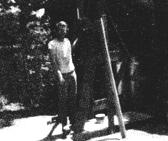
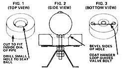
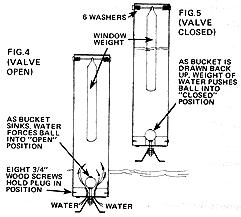
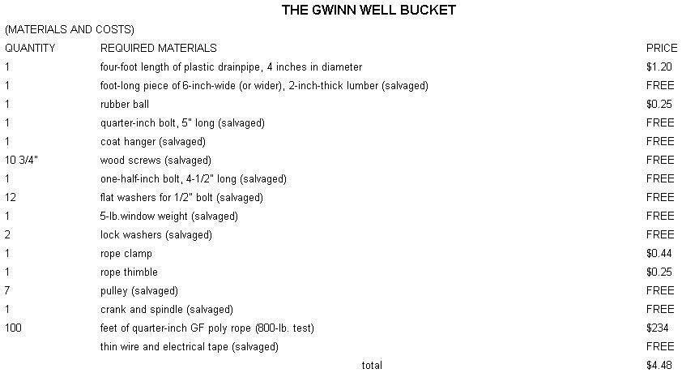

QUESTION: How do you draw water from a deep well without a pump?
ANSWER: Let Clifford Gwinn tell you!
Last year's mid-July found us in something of a bind. We had just moved onto our homestead, canning season was upon us, and my wife was pregnant and due to deliver in early August. Our needs, in short, were great . . . but our resources were small. We were, to put it bluntly, [1] without electricity, [2] without water, and [3] to a large extent, without cash.
One of the reasons our finances were at such a low ebb was because I had invested a large chunk of our dwindling bankroll in the drilling of a well. And, after we'd paid for the job, we simply couldn't see our way clear to both have the house wired by an electrician AND install an expensive submersible pump in our new source of water. So we hired the electrician and then sat down to contemplate our remaining dilemma: How would we get water up out of the well, without dipping further into our perilously low bank account.
One idea which sprang to mind was that we might use a well bucket temporarily, at least, until we could afford to go whole hog on a new pump. I'd seen such buckets used when I was a youngster spending my vacations in West Virginia. Thinking that this would prove to be an immediate "way out" of our predicament, I questioned the well driller about the availability of the narrow, self-filling containers . . . only to be told that such devices weren't used in our part of south-central Pennsylvania.
This grim bit of news left me in an excited state of desperation. I couldn't leave my wife to go to West Virginia to order a well bucket . . . and, apparently, I couldn't obtain one locally. I didn't know what I was going to do.
Then-as luck would have it-my fat her came to visit. I say "as luck would have it" because Dad, who grew up in West Virginia, knows quite a bit about rural things (wells included) . . . and thus was in a much better position than we were to suggest a possible solution to our problem.
"Heck," he replied as soon as I had explained the situation, "why don't we just make one of those buckets?"
I was doubtful . . . but the idea did intrigue me. "How?" I asked.
"We'll need a tube or piece of pipe about four feet in length and four inches in diameter, sealed at the lower end, with a valve built into the bottom so the bucket'll fill when it hits the water and close as it's hauled up. It won't be hard to make . . . and the thing should only cost four or five dollars at the outside."
"What are we waiting for?" I asked!
Sure enough, in less than one day's work-and at a cost of only a few dollars-my father and I were able to build a serviceable, honest-to-goodness well bucket that was capable of holding approximately three gallons of water per loading. By nightfall, we had even [1] found a rope for the bucket, [2] scavenged a pulley from an old crank from an ancient farm machine, and [3] hooked everything up so that we could begin to draw water from the well that very evening!
I might add that ever since that night, our bucket has given us nothing less than totally reliable service . . . to the extent that nowadays we no longer even think about installing a submersible pump to replace it.
If you're in a quandary over how to fetch water from a well on your new property-or if you're in the planning stages of having a well drilled on old property-you might be interested in learning how to construct a replica of our lessthan-five-dollar bucket. Here are a few suggestions:
Most of the components I used-as you can see from the accompanying chart-were salvaged at no cost. Depending on the amount of time you want to spend scrounging, it's possible to scavenge all of the materials you'll need (thus reducing the out-of-pocket cost of the project to nothing, or thereabouts). At any rate, you shouldn't have to look far to find the items called out in the chart . . . certainly no farther than the local hardware store or junkyard.
When you've gathered together your materials, start construction by drilling a hole in the piece of 2 X 6 to accommodate the rubber ball that will sit in the bottom of the well bucket. (The hole should be large enough to seat the ball, but not so big that the ball can be pressed through the opening.) Around this orifice, cut a disc out of the wood . . . a disc which will just fit the inside diameter of the four-foot length of drainpipe (Fig. 1).
Next, bevel one side (the top) of the hole with a rasp in order to ensure that the ball has a stable, positive fit under the weight of three gallons of water (Fig. 2).
Fashion a loop in a piece of coat hanger as shown in Photo 1 and-using a pair of 3/4" wood screws-attach this piece of wire (centered on the valve opening) to the underside of the wooden disc or plug (Fig. 3).
Now puncture your rubber ball with a nail (as nearly in the sphere's center as possible). Push the nail all the way through the ball and withdraw it. Next, place a washer on a five-inch-long 1/4" bolt and work the bolt all the way through the nail hole so that the washer is firmly sandwiched between the ball and the bolt head. Then slip a lock washer over the threaded end of the bolt and tighten the washer down against the rubber sphere with a nut. When you're done, the ball should look like the one shown in Fig. 2.
At this point, take the ball/bolt assembly and drop the threaded end of the bolt into the hole in the wooden plug. (Make sure the ball rests evenly enough against the beveled side of the opening to make a watertight seal. Also, see that the bolt is guided through the coat hanger loop on the underside of the block.) Then lock a pair of nuts together on the protruding lower end of the bolt, so that some "working" room is left between the nuts and the coat hanger "guide". The ball/bolt assembly now cannot become separated from the wooden disc, although it can slide freely back and forth through the plug.
If you like, you can affix a small piece of strap metal-bent into a U shape, with a hole drilled in its center-to the lowermost end of the valve bolt, as shown in Fig. 2. This is simply to make it easier for you to apply pressure to the end of the 1 /4" bolt and thereby open the ballvalve when you want to empty the filled bucket.
That's it: You've just completed the valve assembly which is the working "heart" of your soon-to-be well bucket.
Once the valve assembly is finished, it must be mounted in the end of the four-foot section of pipe. To do this, tap the unit snugly into place, and make sure it stays there by putting eight equally spaced 3/4" wood screws through the pipe's wall and into the wooden plug (see Fig. 4). No special seal of any kind is needed, as the wooden end plug will swell during use and thus prevent leakage around the long, skinny container's bottom.
To complete the well bucket, drill two diametrically opposite 1/2" holes in the wall of the drainpipe, about an inch below the container's top. Thread a 1/2" bolt through one of the holes, through six washers, a window weight, six more washers, and then through the other hole so that the window weight hangs from the bolt's center. (The purpose of the weight is to make the bucket heavier and thereby cause it to fill faster. Consider the sinker optional . . . but if you decide not to use one, be sure to add more washers to both sides of the crossbolt in order to center the rope that'll later be tied to it.)
There are probably more ways to connect a rope to a well bucket than there are ways to swill a hog . . . so you needn't follow my procedure when it comes to readying your bucket for "the big plunge". Nonetheless, what I did was: [1] wrap about two feet of the line around each side of the window weight between the washers and the weight itself, [2] tie a double knot dead center over the five-pound weight, [3] wire the loose end of the rope to the long end, up to a point located an inch or so above the top of the well bucket, [4] loop the loose end around a rope thimble (so as to have a point from which to hang the bucket when it's not in use), [5] apply a rope clamp above the thimble, and [6] wire down the remaining loose end.
Once you've connected a line to your bucket, you can either hand draw the container-a procedure that's guaranteed to build strong biceps twelve ways-or rig some sort of winch and pulley arrangement (as I did) to do most of the work of raising the filled container for you.
When you're ready to give it a go, simply lower the bucket into the well until you hear it hit the water . . . then give it a little more slack and listen for a gurgle. Seconds later, the container will be full and can be retrieved. When the bucket is up out of the well, place it over whatever you wish to fill with water and set it down gently to push the valve open. And that's all there is to it.
If you plan to use the bucket for years to come, consider running a small-gauge wire-such as you'd use to hang pictures with-between the 1/2" bolt at the top of the bucket and the 1/4" bolt that goes through the rubber ball. (Make sure there's ample slack in the wire.) Then, when the bucket is full, you can merely reach in and pull the wire to release the valve.
I'll grant that this isn't the most sophisticated water retrieval system in the world-nor the easiest to operate-but it sure gets the job done.
And the price-to say the least-is right.
|
 |
 |
 |
|
 |
|
|